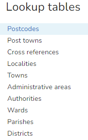
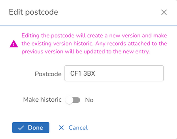
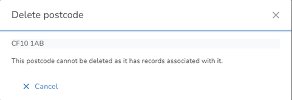
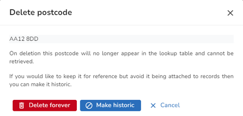
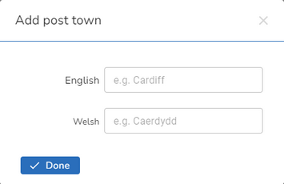

Lookup tables |
Top Previous Next |
|
In the iManage Gazetteer database Postcodes, Post Towns, Cross References, Localities, Towns, Administrative Areas, Authorities, Wards and Parishes, are all stored in Lookup tables. Note: For a Scottish Gazetteer this will also include Islands & Sub Localities. A numerical value referencing each locality, town etc., is stored in the database record instead of the actual value. This is for several reasons: •To reduce errors in data entry. When entering data users may select these values from drop down menus instead of typing a value. •Ease of updating the database if a value changes. If one of the values in the lookup table is found to be incorrect or changes then it only needs to be edited once in the lookup table rather than having to update the entire database. •If you are an authority that has more than one language e.g. Welsh or Gaelic, to link the correct Lookup entries for each language. To maintain your Lookups, click on the Lookup tables under Customisation in the Settings. If you are working with a Bilingual Gazetteer then, each lookup that requires a language equivalent will display both languages. Note: You may not see all of the entries as some are dependent on the modules you have enabled e.g. NLPG, NSG, ASD. Also for One Scotland you will see Islands and Sub-localities.  Maintaining the Lookup tablesThere is an easy Search function at the top if you wish to search for the relevant entry. Start entering the string that you wish to find and you will be positioned in the list accordingly. To clear your search click the X. To maintain an existing lookup, first select the Lookup table you are interested in from the list. If you hover over an entry you will see the Edit and Delete icons. Editing the Lookups has the same basic logic for all the lookups but the details for the Cross References and Districts are slightly different. Wards and ParishesAmendments to the Wards and Parishes will only be required if ONS make changes to the codes between iManage Gazetteer database releases. This provides a way for you to update the tables but you will need to know the correct ONS Code and Ward / Parish description. Note: You will not be allowed to delete these lookups only make them historic. Editing an existing LookupWhen editing an existing Lookup the following logic applies (except for Cross References and Districts). If you select to edit a lookup that is being used then you will see a dialog similar to the following:  Changing the value of the Lookup will result in that Lookup being made Historic and a new entry created for the changed value. Any records attached to the previous Lookup will be updated to use the new entry. Setting the entry to be historic will prevent the display of the entry in the drop down list for selection when creating a new Street or Property but will leave the description for historic purposes. Please see the Cross References topic for a complete description of all the entries for a Cross Reference lookup. Deleting an existing LookupWhen deleting an existing Lookup you will see a different dialog depending upon whether the Lookup is being used by a Street or Property in the gazetteer, including Historic records. If the Lookup is being used then you will see a dialog similar to the following letting you know that the Lookup cannot be deleted.  If the Lookup is not being used then you will have a choice as to whether you wish to make the Lookup Historic or delete it forever e.g.  Make your decision by selecting one of the buttons or click Cancel to return without making changes. Adding a new LookupEach of the Lookups will have an Add button e.g. for Post town. Click the button and you can add the required information e.g. for Post town:  Note: The above screen shot displays details for a Bilingual Gazetteer. |